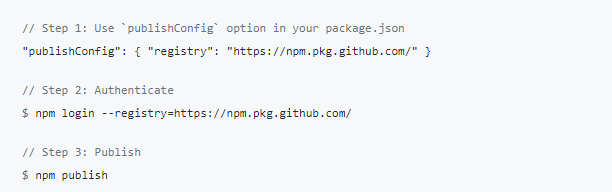

第一次在github上发布一个package: gitbook-plugin-codeline，也遇到一些问题，记录一下。
点击github仓库主页的package发布连接，提示按以下三个步骤操作:

在这里的第2步登录时，用户名为github的用户名，而密码则为github的personal access token，
需要在github的设置中Developer settings → Personal access token中创建一个，注意勾选以下三项:
然后使用生成的token登录npm。
使用npm publish时可能会遇到下面的报错
需要将package.json的name修改为@username/packagename即可发布成功